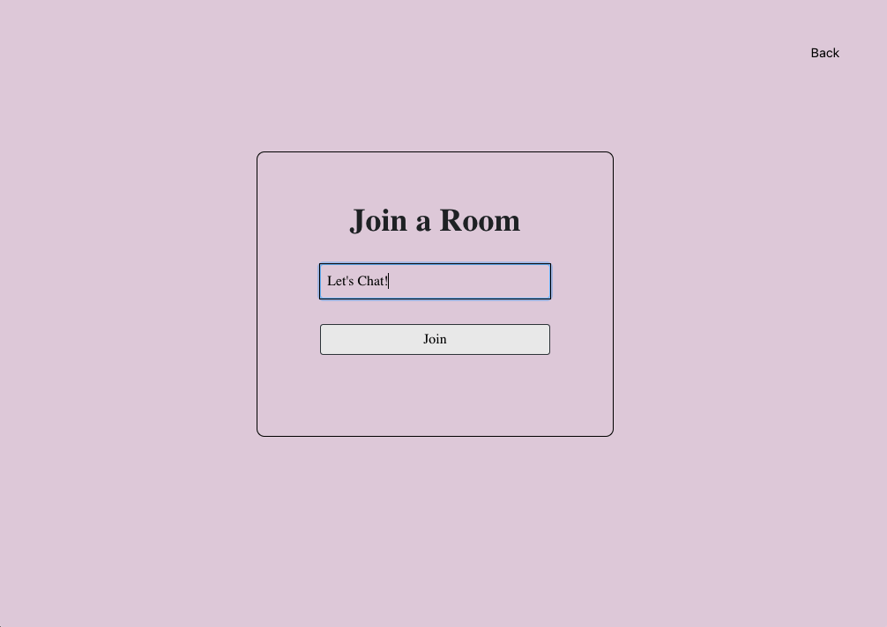
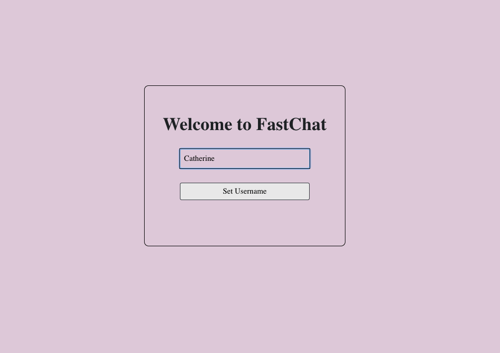

Like the name suggests, it's fast - no need to login or register. Just type a username and a room to join!


When you join an empty room, it should look like this:
Here, you can start chatting or wait for someone else to join the chatroom. Let's wait for someone else to join:
As long as they join the same room, you guys can start chatting.
Here's a screenshot of what Junny (left) and Catherine (right) see on their screens respectively:


Once done chatting with a friend or stranger, anyone in the room can choose to clear the chat room. If no one clears the chat room, the chat history will be there for anyone else who joins the specific chatroom!
Back to Top